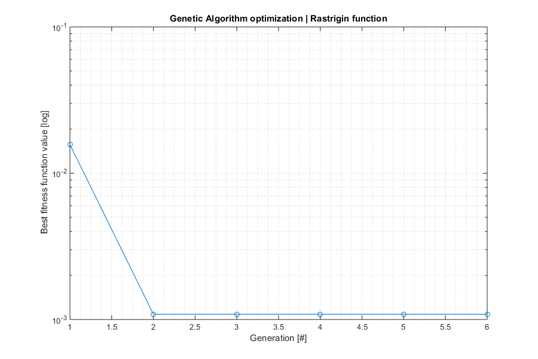
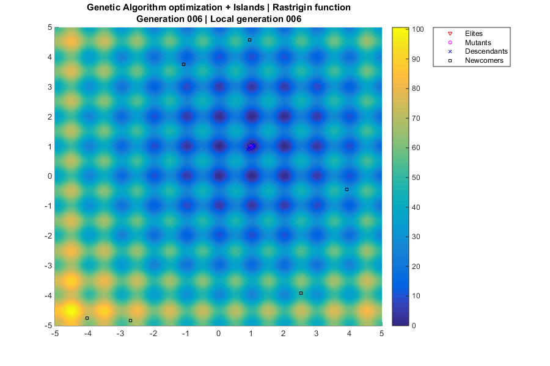

Example AGA Islands
Find minima of a function with Genetic Algorithm (GA) + Islands
Programmers: Manel Soria (UPC/ETSEIAT) David de la Torre (UPC/ETSEIAT) Arnau Miro (UPC/ETSEIAT) Date: 16/04/2015 Revision: 2
Contents
AGA Islands
% Our test is a R^2->R function based on Rastrigin function. % It is challenging because it has infinite local extrema, located at % integer numbers (ie, 8,-9). % The global minimum is at (1,1), and its value is 0. ras = @(x,y) 20+(x-1).^2+(y-1).^2-10*(cos(2*pi*(x-1))+cos(2*pi*(y-1))); % Define GA function options opts.ninfo = 1; % Verbosity level (0=none, 1=minimal, 2=extended) opts.label = 10; % Label (identification purposes) opts.dopar = 1; % Parallel execution of fitness function opts.nhist = 2; % Save history (0=none, 1=fitness, 2=all{pop,fit}) % Define GA_Islands parameters ni = 3; % Number of islands ngg = 6; % Number of global iterations np = 40; % population of each island ng = 6; % Number of local generations nemi = 5; % Number of emigrants N = [3,... % Number of elites floor(np*0.1),... % Number of mutants floor(np*0.05),...% Number of newcomers floor(np*0.2)]; % Number of parents goal = 1E-5; % Target fitness value % Auxiliary function ranrange = @(a,b,n) a + (b-a)*rand(n,1); % n random values between a i b % Define GA functions funique = @(x) x; % Discard identical individuals: currently not in use fitfun = @(x) ras(x(1),x(2)); % Fitness function - TO BE MINIMIZED mutfun = @(x,f) x + ranrange(-0.1,0.1,2); % Mutation: small random mov repfun = @(x,y,fx,fy) (x+y)/2; % Reproduction: average ranfun = @() ranrange(-5,5,2); % Random individual prifun = @(x) fprintf('%f %f ',x(1),x(2)); % Print an individual % Randomize random seed rng('shuffle'); % We don't want repeatability in the GA % We can just give the number of islands and individuals (pops = [ni np]), % then aga_islands generates the populations calling our ranfun. Or we can % generate our own initial populations: pops = cell(1,ni); for illa=1:ni for i=1:np pops{illa}{i} = ranfun(); % Create random individual end; end; % Execute Genetic Algorithm (GA) + Islands [bestind, bestfit, nite, lastpop, lastfit, history] = ... aga_islands ( opts, pops, ngg, nemi, ng, N, goal, ... funique, fitfun, mutfun, repfun, ranfun, prifun ); % Now, we can easily improve the accuracy of the local extremum found options = optimset('TolFun',1e-8,'Display','none'); [bestIndFMS,bestFitFMS] = fminsearch(fitfun,bestind,options); % Display results of aga and fminsearch algorithms fprintf('\nAlgorithm \tBest individual (x,y) \tValue\n'); fprintf('AGAI \t\t%1.6f,%1.6f \t\t%1.6E\n',bestind,bestfit); fprintf('FMS \t\t%1.6f,%1.6f \t\t%1.6E\n',bestIndFMS,bestFitFMS);
aga_islands begin ni=3 np=40 ngg=6 ng=6 Starting parallel pool (parpool) using the 'local' profile ... connected to 4 workers. aga_islands label= 10 gg= 1 fbest= 1.273e+00 island= 2 best: 0.977065 1.965257 aga_islands label= 10 gg= 2 fbest= 1.135e-01 island= 1 best: 0.976567 1.004874 aga_islands label= 10 gg= 3 fbest= 1.655e-02 island= 1 best: 0.999883 0.990867 aga_islands label= 10 gg= 4 fbest= 1.655e-02 island= 1 best: 0.999883 0.990867 aga_islands label= 10 gg= 5 fbest= 1.655e-02 island= 1 best: 0.999883 0.990867 aga_islands label= 10 gg= 6 fbest= 1.655e-02 island= 1 best: 0.999883 0.990867 Algorithm Best individual (x,y) Value AGAI 0.999883,0.990867 1.654673E-02 FMS 1.000005,0.999997 5.668984E-09
Fitness plot
% Get fitness history if opts.nhist>1 && iscell(history) % Full history; get fitness values fithist = zeros(size(history,1),1); for g=1:size(history,1) fithist(g) = history{g,ni+2}; end; else fithist = min(history,[],2); % Simple history end; % Plot data if ~isempty(fithist) % Create figure fh1 = figure('Position',[400,200,900,600]); % Plot history semilogy(fithist,'o-'); % Beautify plot grid minor; title('Genetic Algorithm optimization | Rastrigin function'); xlabel('Generation [#]'); ylabel('Best fitness function value [log]'); end;
Generations plot
% Only show generations when outputting full history if opts.nhist>1 && iscell(history) % Create figure fh2 = figure('Position',[400,200,900,600]); % Plot rastrigin function [x,y] = meshgrid(-5:0.05:5,-5:0.05:5); z = ras(x,y); bh = surf(x,y,z,'LineStyle','none'); colorbar('Location','EastOutside'); view(0,90); hold on; % Population size ne = N(1); % Number of elites nm = N(2); % Number of mutants nd = np - N(1) - N(2) - N(3); % Number of descendants % Plot global generations for gg=1:ngg % Plot local generations for g=1:ng % Title title({['Genetic Algorithm optimization + Islands',... ' | Rastrigin function'];... sprintf(['Generation %03.0f',... ' | Local generation %03.0f'],gg,g)}); % Handles ph = cell(ni,np); % Plot islands for s=1:ni % Plot individuals for i=1:np % Select plotting marker if i<=ne, marker = 'rv'; % Elites range elseif i<=ne+nm, marker = 'mo'; % Mutants range elseif i<=ne+nm+nd, marker = 'bx'; % Descendants range else marker = 'ks'; % Newcomers range end; % Plot individual x = history{gg,s}{1}{g,1}{i}(1); y = history{gg,s}{1}{g,1}{i}(2); z = 100; ph{s,i} = plot3(x,y,z,marker,'MarkerSize',4); % Save legend ticks if i==ne, lh(1) = ph{s,i}; % Elite elseif i==ne+nm, lh(2) = ph{s,i}; % Mutant elseif i==ne+nm+nd, lh(3) = ph{s,i}; % Descendant elseif i==ne+nm+nd+1, lh(4) = ph{s,i}; % Newcomer end; end; end; % Legend legend(lh,'Elites','Mutants','Descendants','Newcomers',... 'Location','NorthEastOutside'); % Do events drawnow; % Wait pause(0.5); % Delete individuals if ~(gg==ngg && g==ng) % Keep only last plot) for s=1:ni, for i=1:np, delete(ph{s,i}); end; end; end; end; end; end;